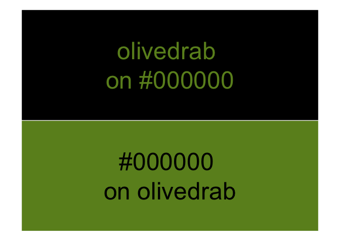
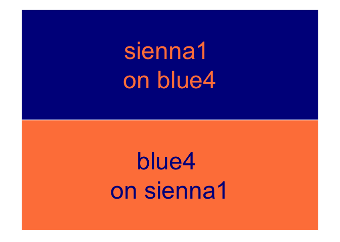

This work-in-progress R package helps calculate color-contrast values so you can make decisions to improve the visual accessibility of your R outputs. You can read a blog post about it.
It was originally developed with the need for selecting high-contrast text colors for use on block-colored backgrounds. The ultimate aim is to create a tool for compliance with WCAG 3.0.
Feel free to add an issue or a make a pull request. Please follow the code of conduct.
Update (2020-12-25): I discovered that the {savonliquide} package by Ihaddaden M. El Fodil achieves the main aim of this package using the WebAIM contrast checker API. It’s available on CRAN.
Installation
You can install the development version of {coloratio} from GitHub with:
remotes::install_github("matt-dray/coloratio")Examples
Get contrast ratio
The cr_get_ratio() function returns the color-contrast ratio of two user-provided colors. You can provide hex values, named colors, or both.
library(coloratio)
cr_get_ratio("#000000", "white")
# [1] 21You should aim for a value of 4.5 or greater. You’ll get a warning if the contrast between the colors is insufficient.
cr_get_ratio("black", "grey10")
# Warning in cr_get_ratio("black", "grey10"): Aim for a value of 4.5 or higher.
# [1] 1.206596Read more about the calculation in the WCAG 2.1 guidance.
Colour contrast demo
cr_get_ratio() also lets you view a plot of text on a block background using the supplied colors by setting view = TRUE.
cr_get_ratio("#000000", "olivedrab", view = TRUE)
You can access this visual functionality in isolation with cr_view_contrast().
cr_view_contrast("blue4", "sienna1")
Choose black or white
You may want to alter programmatically the color of overlaying elements when the underlying color varies. For example, when putting text over the bars of a grouped bar chart.
The function cr_choose_bw() returns "white" or "black" depending on which has the better contrast ratio with the user-supplied color.
cr_choose_bw("gray10")
# [1] "white"
cr_choose_bw("gray90")
# [1] "black"Black is chosen in the event of a tie.
Choose a high-contrast color
You can use cr_choose_color() to check a user-supplied color against all named R colors and return those with greatest contrast.
cr_choose_color("midnightblue")
# [1] "white"
cr_choose_color(
col = "olivedrab", # user-supplied color
n = 3, # number of colors to return
ex_bw = TRUE # exclude black, whites, grays?
)
# [1] "navy" "navyblue" "blue4"You have the option to exclude black, whites and grays from being returned because they’re boring.
Code of Conduct
Please note that the {coloratio} project is released with a Contributor Code of Conduct. By contributing to this project, you agree to abide by its terms.